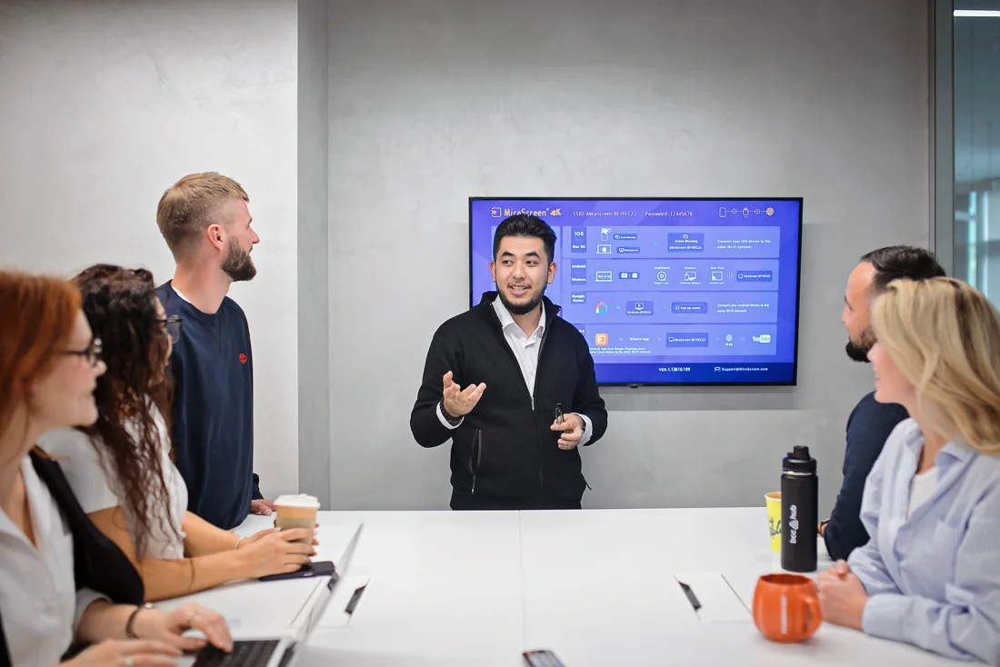
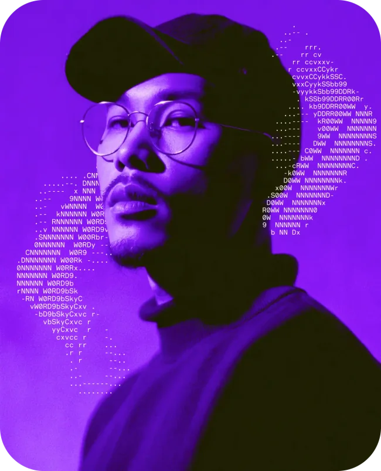

ПОНИМАТЬ ЗАДАЧУ
QA и аналитика
Разобраться в требованиях и посмотреть на задачу глазами QA-инженера.
Выбрать рольКачество начинается
с требований.
Создай AI-агента для анализа качества требований
и подготовки тестовой документации.
Прокручивай вниз.
Твой агент пройдёт путь
от знакомства с задачей до демо.
Хакатон BCC-HUB о том, как AI помогает QA-инженерам работать с требованиями и готовить тестовую документацию.
Собери прототип полезного инструмента для инженерной команды. Конкретное задание и материалы ты получишь на хакатоне.
Как AI может помочь с требованиями?
Больше внимания качеству требований
2-4 человека с разными навыками.
Выберите, кто за что отвечает, и работайте над одним решением.

Разобраться в требованиях и посмотреть на задачу глазами QA-инженера.
Выбрать рольСпроектировать AI-агента и собрать работающий прототип для QA-команды.
Выбрать рольПродумать понятный сценарий работы и показать, как пользоваться решением.
Выбрать рольЭто роли в одной команде. Задание участники получат на хакатоне.
Практика на стыке AI, требований
и качества программных продуктов.

Знакомство с форматом, командой и направлением хакатона.
Конкурсное задание и необходимые материалы выдаются участникам на хакатоне.
Разработка AI-прототипа для анализа качества требований и подготовки QA-документации.
Показать, как работает решение, и объяснить подход команды.
Познакомьтесь, обсудите сильные стороны и попробуйте собрать небольшой AI-прототип на открытых материалах.
Сейчас достаточно понять направление:
AI для работы с требованиями и QA-документацией.
Кто нужен в команде, что подготовить и когда ждать детали.
Перейти к участиюТем, кому интересно применять AI в работе с требованиями и качеством программных продуктов. В команде пригодятся навыки QA, аналитики, разработки и проектирования интерфейсов.
От 2 до 4 человек. Распределите задачи по сильным сторонам: кто разбирается в требованиях, кто собирает агента, кто продумывает работу с результатом и готовит демо. Один участник может совмещать несколько ролей.
Разработка понадобится команде, но вклад каждого может быть разным. Анализ требований, проверка результатов и понятный сценарий использования так же важны для рабочего прототипа.
Даты, площадка, формат и условия участия уточняются. Регистрация ещё не открыта. После подтверждения организаторами информация и форма появятся на этом сайте.
AI-агента, который помогает анализировать качество требований и готовить тестовую документацию для QA-команды. Конкретную задачу участники получат на хакатоне.
На старте хакатона. Тогда участники узнают подробности задачи и правила работы. Заранее конкурсные материалы на сайте не публикуются.
Соберите команду из 2-4 человек, обсудите роли и освежите основы работы с требованиями, QA и AI-инструментами. Для практики можно попробовать небольшой прототип на открытых материалах.
Выбор роли помогает определиться со своим вкладом и сохраняется только на вашем устройстве. Памятка содержит общее направление хакатона и советы по подготовке. Эти действия не отправляют заявку и не подтверждают участие.
Собери команду.
Посмотри на качество продукта через AI.
Форма появится здесь после запуска.
А пока - найди свою команду.